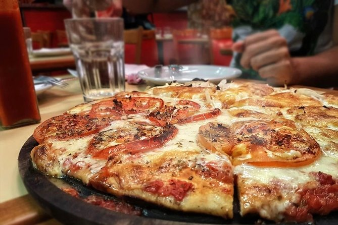

Pizza

Description
Recipe for 3 large pizzas, that you can eat or freeze for later
Ingredients
- 1kg of flour
- 500ml of lukewarm water
- 15gr of dry yeast
- 2 tablespoons of sugar
- 1 tablespoon of salt
- 2 tablespoons of olive oil
- Tomato sauce
- Toppings of your choice (Ham, cheese, pepperonis, peppers)
Steps
- Mix the flour, sugar, salt and yeast in a bowl
- Add the water slowly, stir constantly to avoid lumps
- Knead the dough until smooth
- Put the dough in a bowl and cover it with plastic wrap
- Let it rest until doubled in size (~1 hour)
- Divide the dough into 3 small balls
-
Cover them with a bowl or plastic wrap and let them rest for 15 min
- Preheat the oven at 240°C and oil the pizza pans
-
Stretch the dough enough to cover the pizza pan, and put sauce in it
- Put it in the oven for 10/15 min
- Pull it out of the oven and put your toppings
- Put it in the oven for 10/15 min
- Repeat for the remaining dough
- Let it cool for a bit and enjoy the pizza!!